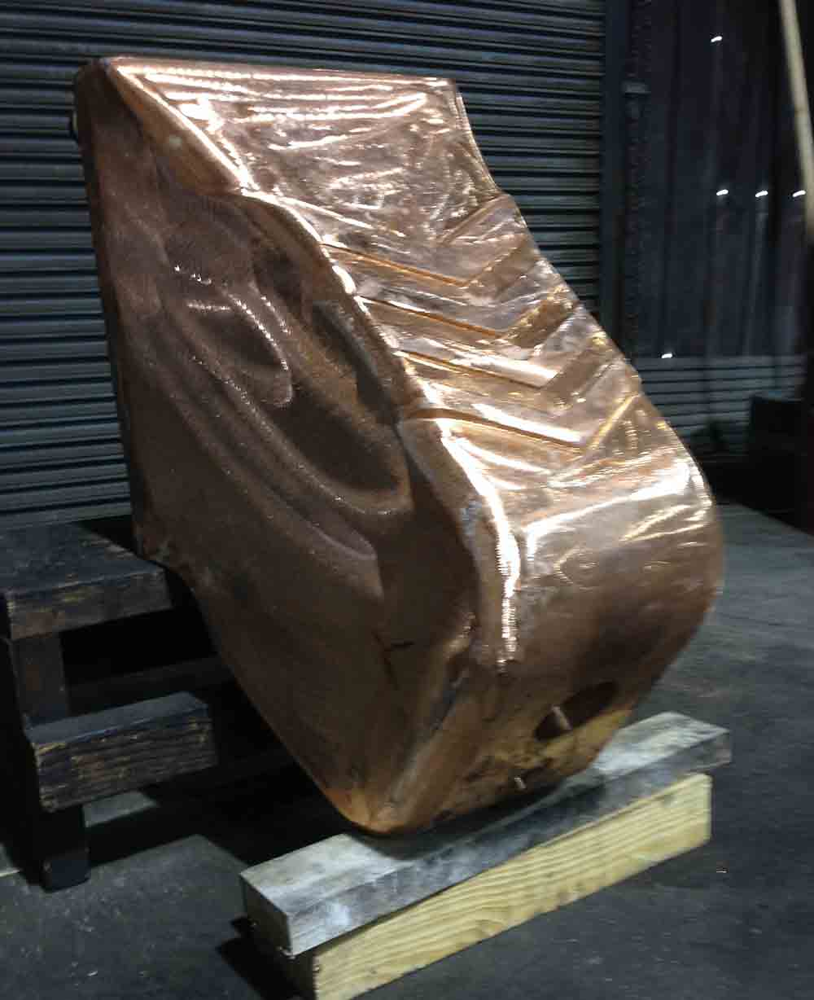
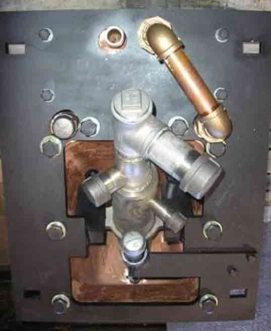

The Basilisk™ B-1000 panel allows for the PyreJet™ or ALARC™-Jet nozzle to be mounted deeper inside the furnace and reduces the distance between the outlet of the PyreJet™ and the metal line. Basilisk™ panels must be installed a minimum of 900 mm from the steel bath.
The Basilisk™ B-1000 panel provides the following benefits:
- Very close placement to the steel bath
- Increases oxygen efficiency
- Reduces refractory erosion
- Improves efficiency of injected carbon
The Basilisk™ panel is equipped with a replaceable carbon injection pipe located right below the injector centerline. This allows for carbon to be entrained and driven into the slag by highly aspirating supersonic stream.
The panel is also supplied with a mounting plate.

